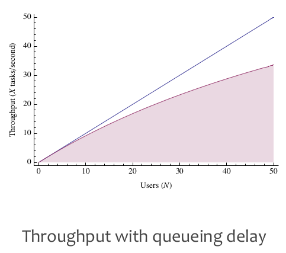
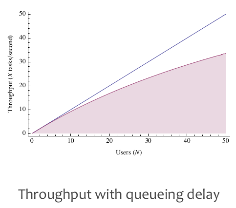

Thinking Clearly about Performance
- http://queue.acm.org/detail.cfm?id=1854041
- http://method-r.com/papers/file/44-thinking-clearly-about-performance
#note: 作者强调最多的就是分析性能时应该考虑单个execution执行效果而不是仅仅是看系统整体的执行效果
performance is not an attribute of a system. performance is an attribute of each individual experience with a system. (percentile specification)
- you will catch more problems if you just try.
- you will never catch them all.
- you can't know how your applicaiton will perform until you go live.
- you need to write your application so it's easy to fix performance in production. # 在应用中嵌入profile功能
when obviously different experiences yield the same measurement, you're measuring the wrong thing.
skew is what fouls your ability to predict results. # 比如函数A总共花费500s, 一共调用100次。但是其中90次一共花费90s，剩余10次花费410s.
two types of waiting:
- queueing delay. time spent waiting in a queue for access to a shared resource.
- coherency delay. time spent communicating and coordinating access to a shared resource.
 
